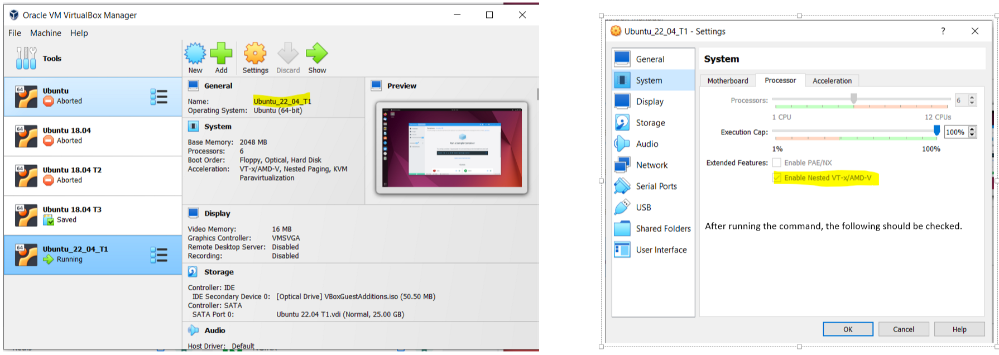

This page contains my notes from Docker in Action book by Jeff Nickoloff, and Udemy course by Bret Fisher
Index:
Udemy Docker Course:
Section 3: The best way to set up Docker for your OS
Section 4: Creating and using containers like a boss
Section 3: The best way to set up Docker for your OS
Lecture 13: Docker for Linux Desktop: Setup and Tips
- Link to Lecture.
- Make sure you are using Ubuntu 22.04.1 LTS. It does not work with Ubuntu 18. The Guest Addition in Ubuntu 22 does not resize on its own. Follow this YT tutorial to fix it.
- Linux VM password itself is
- Install Docker Desktop. The step 1 of that link would mean following this link. Do both the steps "Set up the repository" and "Install Docker Engine". Step 2 would mean a file like this would be downloaded:
- Now when you run
- Docker Desktop did not work at this point. It was stuck at "Docker Desktop stopped..." screen. The solution is enable KVM Virtualization for VirtualBox through the Enable Nested VT-x/AMD-V checkbox as mentioned in this SO link. Shut down your VM and VirtualBox. For your windows machine, you will have to do it like mentioned in this SO post. In Windows, go to VirtualBox installation folders (C:\Program Files\Oracle\VirtualBox) -> type cmd on the bar (it will pop up cmd in that folder) -> type
- You will also get a "Credential Not Initialised" error when you try to Sign In into the Docker Desktop. Follow the instructions on the popup to fix that. This should be
straightforward.
- https://github.com/docker/desktop-linux/issues/52
- https://stackoverflow.com/questions/72281976/docker-is-running-docker-desktop-says-docker-desktop-stopped
- Make sure you are using Ubuntu 22.04.1 LTS. It does not work with Ubuntu 18. The Guest Addition in Ubuntu 22 does not resize on its own. Follow this YT tutorial to fix it.
- Linux VM password itself is
asdf. - Install Docker Desktop. The step 1 of that link would mean following this link. Do both the steps "Set up the repository" and "Install Docker Engine". Step 2 would mean a file like this would be downloaded:
docker-desktop-4.13.1-amd64.deb. So you will cd into your Downloads folder and run the command specified
in step 3 like sudo apt-get install ./Downloads/docker-desktop-4.13.1-amd64.deb - Now when you run
sudo docker version, you should be able to see all the details. - Docker Desktop did not work at this point. It was stuck at "Docker Desktop stopped..." screen. The solution is enable KVM Virtualization for VirtualBox through the Enable Nested VT-x/AMD-V checkbox as mentioned in this SO link. Shut down your VM and VirtualBox. For your windows machine, you will have to do it like mentioned in this SO post. In Windows, go to VirtualBox installation folders (C:\Program Files\Oracle\VirtualBox) -> type cmd on the bar (it will pop up cmd in that folder) -> type
VBoxManage modifyvm <YourVirtualMachineName> --nested-hw-virt on. YourVirtualMachineName is Ubuntu_22_04_T1 in this case.
Show Image 

- https://github.com/docker/desktop-linux/issues/52
- https://stackoverflow.com/questions/72281976/docker-is-running-docker-desktop-says-docker-desktop-stopped
Section 4: Creating and using containers like a boss
Lecture 17: Check our Docker install and config
- Link to Lecture.
-
-
-
-
docker version: Check your docker versions and that docker is running. -
docker info: Shows most configuration values for the docker engine. -
docker: Will show all the commands that you can run. The format of how to run commands has changed. We now have management commands that need to be specified.
So earlier, the format of a command was docker <command> (options). Now, the format is
docker <command> <sub-command> (options). So earlier you would run docker run, now instead you would run
docker container run. This change was introduced recently, so any commands that made use of the earlier syntax, still support that syntax.